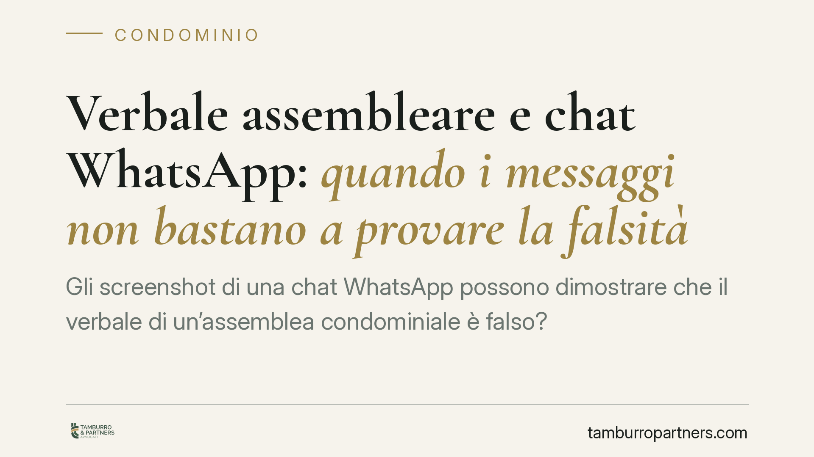

Verbale assembleare e chat WhatsApp: quando i messaggi non bastano a provare la falsità
Gli screenshot di una chat WhatsApp possono dimostrare che il verbale di un'assemblea condominiale è falso? Secondo la Corte d'Appello di Brescia no, se prodotti in semplice copia fotografica e non attribuibili con certezza ai partecipanti. Una decisione che chiarisce quale peso probatorio abbiano davvero i messaggi elettronici nel contenzioso condominiale e come vadano gestiti.

Il caso
Una condomina impugnava la delibera assembleare, sostenendo che il verbale fosse falso nella parte in cui attestava l'approvazione all'unanimità. A supporto produceva alcuni messaggi WhatsApp che, a suo dire, dimostravano un orientamento diverso dei partecipanti.
Il giudizio proseguiva con gli eredi della condomina. La Corte d'Appello di Brescia ha però confermato il rigetto dell'impugnazione: i messaggi, prodotti in copia fotografica e non attribuibili con certezza agli autori, non erano idonei a smentire quanto riportato nel verbale.
*(Gli estremi completi della pronuncia — sezione e numero — vanno verificati sulla fonte prima di ogni utilizzo citazionale.)*
Inquadramento normativo
Occorre anzitutto sgombrare il campo da un equivoco diffuso. Il verbale di assemblea condominiale è una scrittura privata. Non è un atto pubblico e non gode di quella "fede privilegiata" che richiede la querela di falso per essere contestata. Significa che il suo contenuto può essere messo in discussione con prova contraria secondo le regole ordinarie: chi afferma che il verbale non corrisponde al vero deve dimostrarlo (art. 2697 c.c. sull'onere della prova).
Il punto decisivo riguarda però il valore degli screenshot. Una schermata di WhatsApp non è una scrittura sottoscritta: è una riproduzione meccanica ai sensi dell'art. 2712 c.c. Questo tipo di documento forma piena prova dei fatti che rappresenta solo se la controparte non ne contesta la conformità ai fatti originari. In caso di disconoscimento, la riproduzione perde automaticamente efficacia probatoria piena e il valore della chat va ricostruito con altri mezzi.
Perché i messaggi non sono bastati
La Corte ha fondato il rigetto su due ragioni concrete e tra loro distinte.
Primo: la manipolabilità della copia fotografica. Uno screenshot è un'immagine. Può essere ritagliato, alterato, decontestualizzato. In assenza di una verifica tecnica che ne garantisca integrità e provenienza, non offre quelle garanzie di autenticità necessarie per smentire un documento formale come il verbale.
Secondo: la mancata attribuzione certa della paternità. Non basta esibire un messaggio: occorre dimostrare chi lo ha effettivamente scritto. Un numero di telefono, un nome visualizzato in rubrica o un avatar non equivalgono alla certezza che quel determinato condomino abbia inviato quel determinato testo. Senza paternità certa, il contenuto resta inutilizzabile come prova della falsità.
Implicazioni pratiche
Per chi gestisce un condominio — amministratore o singolo condomino — la decisione ridimensiona un'illusione ricorrente: pensare che una conversazione informale su una chat possa facilmente ribaltare ciò che è stato messo a verbale.
Il verbale, pur essendo scrittura privata contestabile, conserva un peso significativo finché non sia smentito da prove solide. E gli screenshot, da soli, raramente lo sono. Chi voglia farli valere in giudizio deve mettere in conto che la controparte potrà disconoscerli, costringendolo a dimostrarne aliunde autenticità e provenienza.
Questo non rende le chat irrilevanti. Le rende però mezzi di prova fragili se gestiti con superficialità. Una conversazione digitale acquista valore solo quando viene raccolta e documentata con metodo.
Cosa fare in concreto
- Verbalizzare con precisione. Far risultare a verbale nominativi, voti espressi, eventuali dissensi e dichiarazioni a verbale. Un verbale accurato è la prima difesa contro contestazioni successive.
- Non affidarsi al solo screenshot. Una semplice schermata è manipolabile e facilmente disconoscibile: da sola non prova nulla di solido.
- Richiedere un'estrazione forense. Se una chat può avere rilievo probatorio, è opportuno affidarne l'acquisizione a un tecnico che attesti integrità, data e provenienza del dato digitale.
- Documentare la paternità dei messaggi. È opportuno conservare elementi che colleghino con certezza il contenuto al suo autore (numerazioni, metadati, riscontri incrociati).
- Valutare i tempi dell'impugnazione. È opportuno verificare per tempo la decorrenza dei termini di impugnazione della delibera, distinti dalla questione probatoria.
---
Contributo informativo a cura di Tamburro & Partners Avvocati. Non costituisce parere legale.
Ogni condominio ha una storia a sé.
Se gestisci un'amministrazione e vuoi un confronto su una specifica questione condominiale, scrivi allo studio. Ti rispondiamo entro un giorno lavorativo.